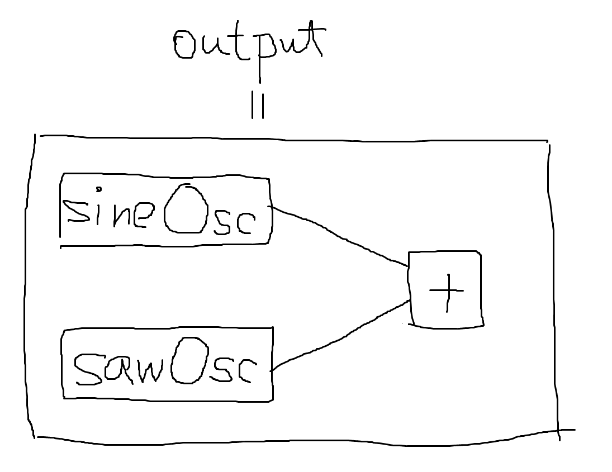
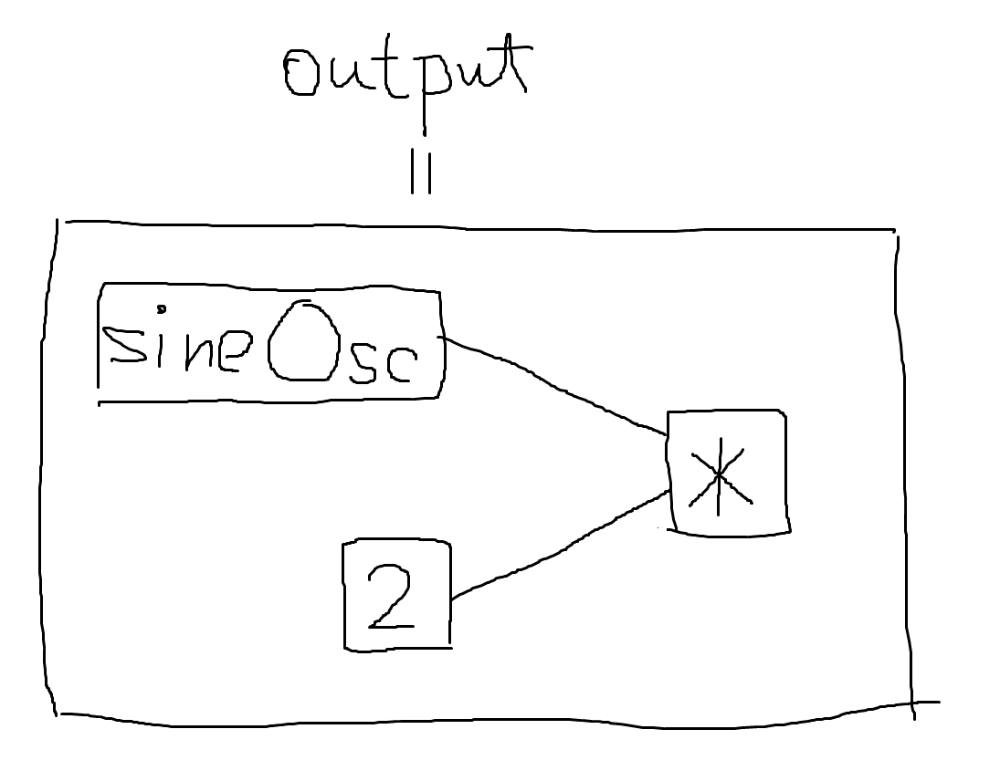

ModDL における数値演算を行う演算子や関数は全てオーバーロードされており、引数の型に応じて異なる演算を行うようになっています。これは、効率的な数値演算と、構造の簡潔な記述とを両立することを目的としたものです。
オーバーロードのあり方は演算の種類ごとに異なっています。以下では演算の種類ごとに、与えた引数の型と、それに応じた演算子・関数のふるまいについて説明します。引数の型が以下で説明するもの以外の場合はエラーとなります。
数値演算を行う演算子と関数の多くは、「全ての引数が Number の場合」と、「引数の少なくとも 1 つが ModuleDef の場合」とで異なる演算を行うようになっています。
これに該当するのは以下の演算です：
^,
*,
/,
%,
+,
-,
<,
<=,
==,
!=,
>=,
>,
&&,
||
+ や
==
など、さらに特殊なオーバーロードをもつ演算子も存在します。詳しくはそれぞれの記事を参照してください。!,
-,
+log,
sin,
abs,
round
等々引数の型に応じた動作を以下に説明します。
引数が全て Number であれば、通常の数値演算が行われます。
たとえば、@let :answer, 6 * 7 という文があれば、変数
answer は 6 * 7 の結果である 42
になります。
この演算は、定義フェーズで ModDL インタプリタによって行われます。演奏開始時にはすでに値が確定しているため、演奏フェーズでサンプルごとに演算が行われるようなことはありません。
他の演算、たとえば !
のような単項演算であったり、sin
や floor
のような関数で表現される演算であっても扱いは同様です。! true
は定義フェーズで false（= -1）となり、同様に
sin(0) は 0 となります。
一方、演算に ModuleDef が関係する場合は、結果も ModuleDef になります。
たとえば、@let :output, sineOsc + sawOsc
という文を考えます。ここでは先ほどの例と異なり、+
の引数はどちらも ModuleDef となっています（NodeDef も ModuleDef
の一種です）。この場合、演算の結果は「入力として sineOsc
と sawOsc
の出力を受け取り、それらを足し合わせたものを出力するノードの
ModuleDef」となります。

つまり ModuleDef に対する演算では、実際の数値演算は定義フェーズではなく演奏フェーズでサンプルごとに行われます。
引数の一方だけが ModuleDef で、もう一方は Number
である場合も要領は同じです。この場合、Number の側が「定数値を出力する
NodeDef」に変換されます。たとえば @let :output, sineOsc * 2
では、結果は以下のような ModuleDef になります：

if 式if 式は、条件式、then 式、else
式の 3
つの引数を取りますが、このうち条件式の型によってのみオーバーロードされています。
条件式が Number の場合、その値を真偽値として解釈したときに真であれば
then 式の値、偽であれば else
式の値が結果となります。then 式と else
式の型については検証・変換されません（両者の型が異なっていてもかまいません）。この演算は定義フェーズで行われます。
条件式が ModuleDef の場合、then, else
式もそれぞれ ModuleDef として解釈され（Number であれば ModuleDef
に変換されます）、条件式の値を真偽値として解釈したときに真であれば
then 式の出力、偽であれば else
式の出力を出力する ModuleDef
が結果となります。この場合、条件演算は演奏フェーズでサンプルごとに行われます。
ここまでは組み込みの演算子や関数について説明しましたが、実はユーザが定義した関数も同様のふるまいをします。
たとえば @let :dist, (x, y) => sqrt(x ^ 2 + y + 2)
という関数を考えます。
この関数に与える x と y がともに Number
であれば、全ての演算（累乗、加算、平方根）は数値演算となります。したがって定義フェーズだけで計算が完結し、結果は
Number となります。
そうでない場合、たとえば、x に Number ではなく ModuleDef
を与えた場合を考えます。このとき、x ^ 2 の結果は Number
ではなく ModuleDef になります。すると、それに対する加算である
x ^ 2 + y ^ 2 も（y ^ 2 が Number か ModuleDef
かに依らず）ModuleDef になり、さらにはそれを引数とする、最終結果である
sqrt(x ^ 2 + y ^ 2) までも ModuleDef になります。
y を ModuleDef
にした場合も同様の過程を経て同じ結果になるので、結局 dist
関数は組み込みの + や
sin
と全く同様にオーバーロードされていることになります。
このように、基本的な数値演算がオーバーロードされていることに端を発して、より複雑な計算においても自動的にオーバーロードのメリットを享受することができます。